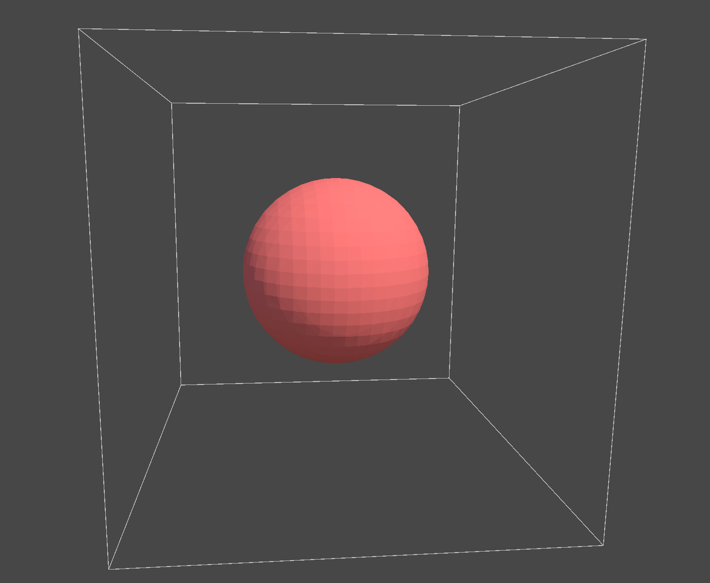
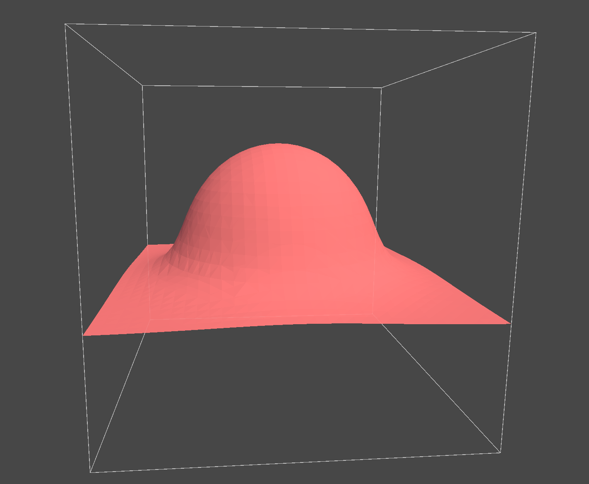
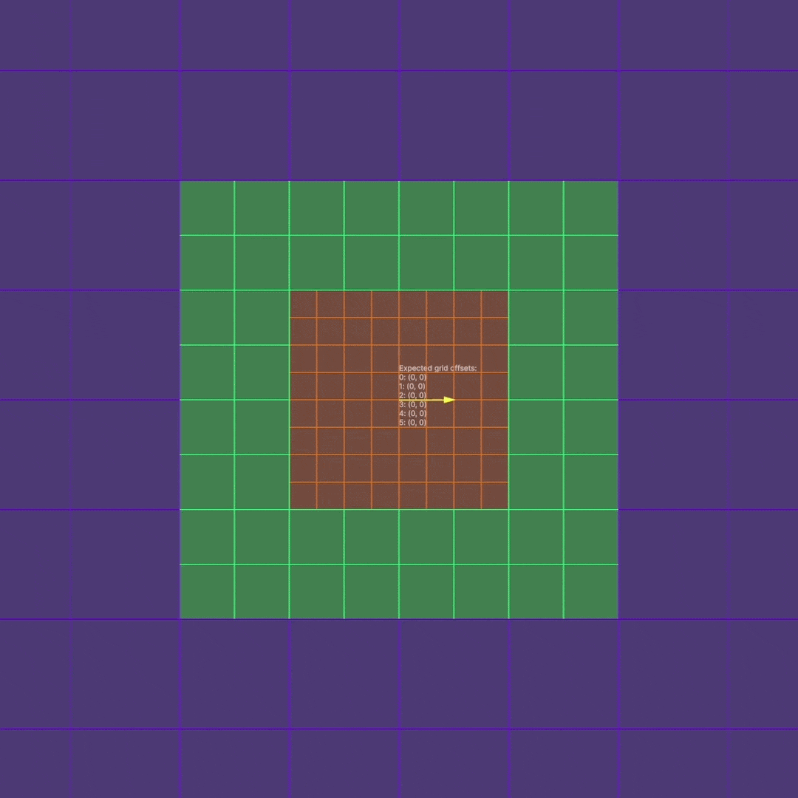
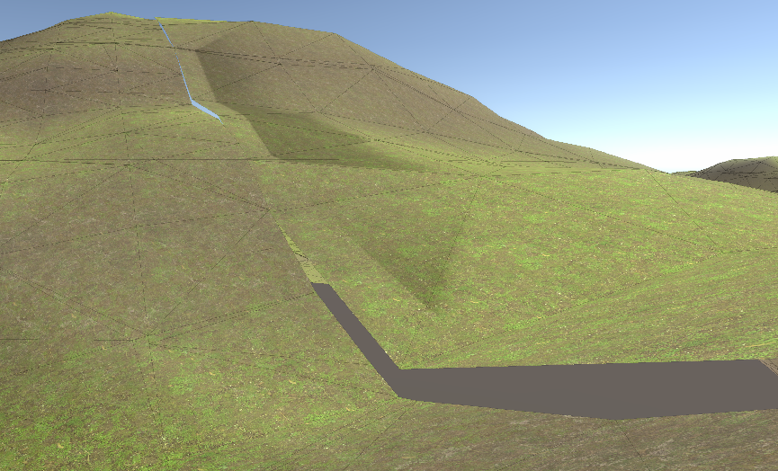

int3[] cornerOffsets =
{
(0, 0, 0), // 0 6--------7
(1, 0, 0), // 1 /| /|
(0, 1, 0), // 2 / | / |
(1, 1, 0), // 3 4--------5 |
(0, 0, 1), // 4 | 2-----|--3
(1, 0, 1), // 5 | / | /
(0, 1, 1), // 6 |/ |/
(1, 1, 1) // 7 0--------1
};
byte caseCode = 0;
for (uint i = 0; i < 8; i++)
{
int3 coordinate = cellIndex + cornerOffsets[i];
if (SampleDensity(coordinate) > 0)
caseCode |= (1 << i);
}d = length(coordinate) - radius;
d = -coordinate.y;// Cubic polynomial smin
float SmoothMin(float a, float b, float k)
{
k *= 6.0f;
float h = max(k - abs(a - b), 0.0f ) / k;
return min(a, b) - h * h * h * k * (1.0f / 6.0f);
}
// Calculate size of one chunk.
float3 chunkSize = k_ChunkSize * math.pow(2, clipmapLevelIndex);
chunkSize.z = 0; // Make 2D for demo.
// Compute the centre chunk index at this clipmap level scale from which to build the remaining chunks.
/* To explain the maths here, to find the position on our grid level we would do:
*
* float3 halfChunkSize = chunkSize / 2.0f;
* float3 scaledOriginPosition = ((float3)transform.position + halfChunkSize) / math.pow(2, level);
*
* However, this creates overlaps with higher grid levels, so we calculate it's position on the upper
* grid level and then multiply it by 2 in the next line to restore it to the correct grid level.
*/
float3 scaledOriginPosition = ((float3)transform.position + chunkSize) / math.pow(2, clipmapLevelIndex + 1);
int3 originChunkIndex = (int3)math.floor(scaledOriginPosition / k_ChunkSize) * 2;/*
* This section sets up the skipping of large chunks rendering over small chunks.
*
* In this 2D example, there are 9 positions a lower grid can be in relation to it's encompassing grid.
* From each case, we must algorithmically decide which chunks to skip in the encompassing grid.
*
* These cases can be represented by an public offset in each axis, with potential values -1, 0 and 1.
* This covers all 9 public position cases.
*
* We can then use each axis in relation with our offset index to skip the proper chunks.
*/
m_ClipmapLevelOrigins[clipmapLevelIndex] = originChunkIndex;
int3 lowerGridOffset = 0;
if (clipmapLevelIndex > 0)
{
lowerGridOffset = m_ClipmapLevelOrigins[clipmapLevelIndex - 1] - originChunkIndex - originChunkIndex;
lowerGridOffset /= 2;
}

Coding Adventure: Marching Cubes
https://www.youtube.com/watch?v=M3iI2l0ltbEMarching Cubes optimizations in Unity
https://eetumaenpaa.fi/blog/marching-cubes-optimizations-in-unity/#voxelcorners-vs-stackallocGPU Gems 3 - Generating Complex Procedural Terrains Using the GPU
https://developer.nvidia.com/gpugems/gpugems3/part-i-geometry/chapter-1-generating-complex-procedural-terrains-using-gpuInigo Quilez
https://iquilezles.org/GPU Gems 2 - Terrain Rendering Using GPU-Based Geometry Clipmaps
https://developer.nvidia.com/gpugems/gpugems2/part-i-geometric-complexity/chapter-2-terrain-rendering-using-gpu-based-geometryTransvoxel.org
https://transvoxel.org/